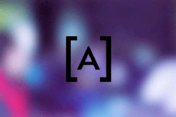

6 nov
Mobile Monday México
Restaurante Don Asado, DFMobile Monday México, Oportunidades para Apps con base en NOMS
Mobile Monday México está dirigido a una comunidad abierta de visionarios de la industria móvil, profesionales, diseñadores, emprendedores y líderes de opinión del medio. En esta novena edición de Mobile Monday México contaremos con la participación de diversas personalidades del sector tratando el tema: Oportunidades para apps con base en NOMs ¡Te esperamos!
6 nov
KaraOkulta DF
SAE Institute MéxicoKaraOkulta DF
Nos reuniremos una vez cada més para presentar arte, game design, tecnología, críticas o lo que sea relacionado con el grupo de desarrolladores de videojuegos de habla hispana. En 20 diapositivas, cada una no más de 20 segundos! Es el pretexto idóneo para conocernos y responder a la pregunta "Qué necesitas para hacer tu videojuego?" y esperamos con esto ir cerrando la brecha de hacerlos y ponerlos en el mercado invitando a toda la comunidad karaokulta que es gente que está por toda la cadena de valor de videojuegos.
7 nov
UX Nights
Estela de la Luz, DFUX Nights Volumen III
UX Nights es una iniciativa destinada a hacer crecer la comunidad de Experiencia de Usuario (UX) en México. Compartiremos en la noche del primer jueves de mes nuestras experiencias junto con chelas y pizzas.
5 nov
Tech Women Community
Hacker Garage, GDLTech Women Community
Tech Women Community es una comunidad formada por mujeres involucradas en la tecnología (programadoras, diseñadoras, testers, sysadmin, soporte, etc) en busca de generar conocimiento y motivar a las mujeres para que participen y se inicien en el mundo de la informática.
8 nov
Behance Portfolio Review
Nevermind, GDL
Behance Portfolio Review - PRW #6
The creative world wants and needs more feedback. It’s the only way our work gets better. Portfolio Review Week was created to foster feedback exchange in the creative community. Behance wanted to develop an offline program so that members could meet in real life and connect with other Behancers from their community.